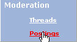
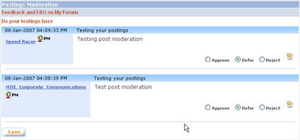
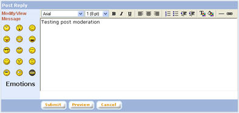
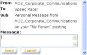

|
Postings Moderation
Postings posted with “Moderation required” setting will be listed on this page. Also, if any topic is set for moderation, postings under that topic will be listed here. Administrators / moderators assigned to moderate a board can only see postings posted under the assigned board and will not be able to view / moderate postings from another boards.
a. Click on “… Postings” button from the left panel of the admin main page.

b. All postings sent for moderation will be listed, categorised into Boards and Topics.

c. Select whether to approve, defer, or reject a posting by selecting from the radio button for the corresponding posting. Except deferred postings all other postings will not be visible after the save. They will be removed from viewing. Approved Postings will start appearing in the discussion forum, whereas rejected threads will not appear at all in the forum
d. To save moderation setting for the postings, click on the “Save” button.
e. Click on the “Edit” button to edit the message of the posting before approving. This will open the “Modify / View Message” pop up window. When a posting is edited, both the original and the modified message will be stored in the audit trail. NOTE: upon clicking on “Edit” button, moderation settings for postings other than the one edited will be saved

f. Modify the message of the posting as needed before approving for the posting to be displayed. Click on “Submit” button to submit modifications made. Click on “Preview” button to preview the message before submitting. Click on “Cancel” button to cancel modifications made and close the pop up window.
1. Send Personal Message
Send Personal Message is used to send a message to the poster. This can be used to notify the poster or ask for further information from the poster regarding the request for posting a reply. The message will be sent using email to the email account of the poster.

The recipient and the subject of the message will be automatically set by the system. The moderator is to enter the message. Click on “Send” button to send the Personal Message” or click on “Cancel” button to close the pop up window. |